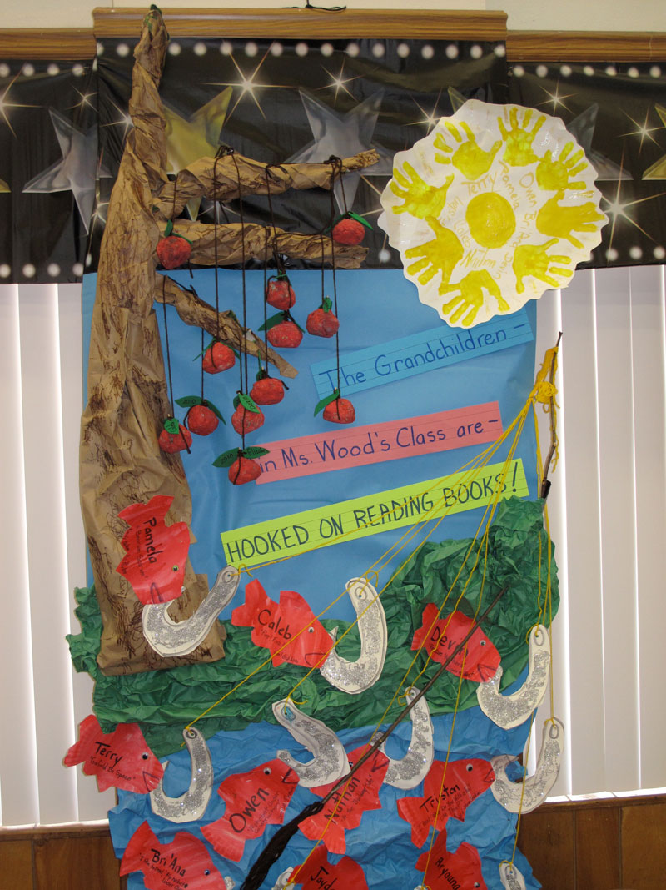
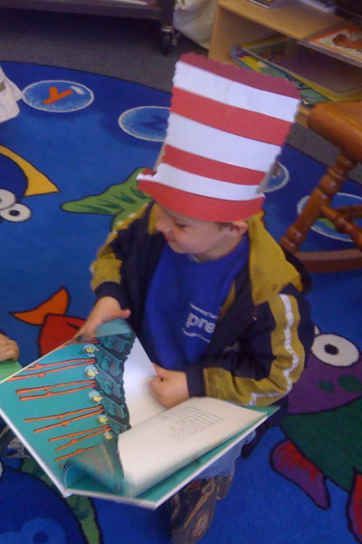
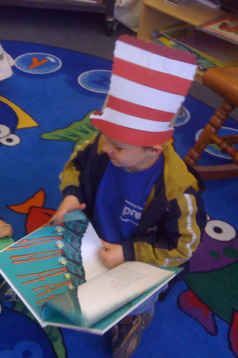
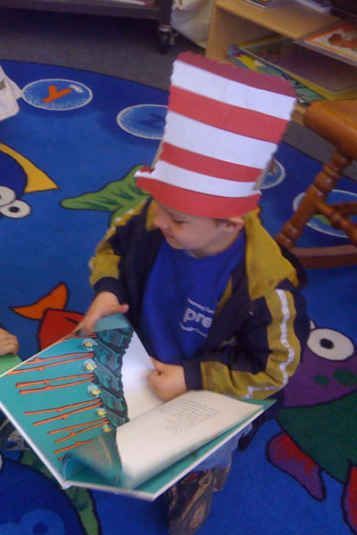

As a parent, grandparent or caregiver you are in a position to greatly enhance your child's brain development and success in school. Reading Aloud to your child, beginning at birth, just twenty minutes a day will make a difference! Your child loves to hear your voice and to have special time with you. Reading a book together with appealing illustrations helps the child associate good feelings with books and the written word. It's not about teaching your child how to read. It is about creating for your child, the " Want to Read."
Here are some Reading Tips:
- Let your child choose the book
- Snuggle in
- Read slowly
- Read author and title of book
- Let your child turn the pages
- Ask questions and make predictions about the story
- Encourage your child
- Read while children are playing
- Be dramatic and have fun!

.JPG) 


Helpful Hints and Suggestions: Overcoming Challenges to Reading to your Children
| Challenges | Solutions |
|---|---|
|
I speak a language other than English. I’m learning how to read. |
|
| My children are different ages. |
|
| I don’t have time. |
|
| We don’t have books at home. |
|
| I’m tired. |
|
| I don’t have quiet space. |
|
| My children are restless. |
|
| I’m not comfortable reading in a way that holds my child’s attention. |
|
| I have a disability that makes reading aloud difficult. |
|
Recomendaciones útiles para superar desafíos al leerle a sus niños o niñas
| Desafíos | Soluciones |
|---|---|
|
El inglés es mi segundo idioma. Estoy aprendiendo a leer. |
|
| Mis hijos tienen diferentes edades. |
|
| No tengo tiempo. |
|
| No tenemos libros en la casa. |
|
| Estamos cansados. |
|
| No dispongo de un lugar tranquilo. |
|
| Mis niños son muy inquietos. |
|
| No me siento a gusto leyendo de manera tal que mantenga la atención de mi hijo. |
|
| Mis niños tienen necesidades especiales. |
|